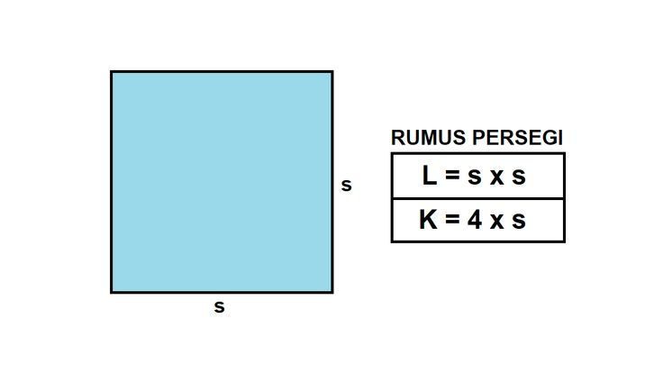

Welcome To Katik
Halo, Sobat Matematika! 👋
alat sederhana dan praktis untuk menghitung keliling dan luas persegi dengan cepat dan akurat. Masukkan angka, klik hitung, dan dapatkan hasil instan! 🚀 Semoga KATIK membantu memudahkan perhitungan matematikamu.

Luas dan Keliling Persegi